November 2017
11/23/2017 - Thanksgiving with my family

-
I plan the menu for Thanksgiving dinner.
- Wen prepares the turkey. He deconstructs it and cooks the breast separately. The dark meat is deboned and rolled up into a roulade.
-
Wen and Robert dice up ingredients and cook the stuffing.
-
Robert makes a large pot of gravy from pan drippings and turkey stock.
-
We also make a traditional green beans casserole topped with fried onions.
-
Of course, we also have rice.
-
And for dessert, David and I bake an apple pie.


- David helps me make apple pie for dessert. Actually, I was helping him make apple pie.
-
We bring out all the ingredients to make the pie crust.
- First, we cut the butter into the flour. That is a fancy baking term to describe cutting cold butter into small cubes and mixing it into the flour.
- Next, ice cold water is slowly incorporated until we acehieve the proper texture. The use of ice cold water prevents the butter from melting and gluten from forming. That would make crust tough instead of flaky.
- The dough is then rolled and folding several times. Butter is spread in between each layer.
-
David and Robert peel and slice the apples.
-
David constructs the pie with crust dough and apples.
-
I apply the egg wash before putting it into the oven.
-
The pie comes out of the oven a golden brown color.
11/17/2017 - Dinner at Buck's

-
My Stanford Speech Communication Group meets at Buck's in Woodside to celebrate the holidays.
-
Wen and I choose the most accessible seats at the table.
-
The group facilitors Donna and Aileen join us.
- I have a hamburger. It was gourmet and gigantic. Wen orders his typical chicken sandwich. He loves the french fries that accompanies it.
11/16/2017 - Thanksgiving dinner at SCVMC

-
Every year, Santa Clara Valley Medical Center hosts a Thanksgiving dinner.
-
Our stroke support group sits at the same table.
- Josh sits at the head of the table. He is a pathologist. Josh has aphasia like me.
- Dr. K., his son and caregivers sit down the left side. He is a dermatologist.
- Gabriella and Tomas are at the other end of the table. They joined the group recently.
- On my side of the table, Marshall sits next to me. He is a piano tuner. Marshall also has aphasia like me.
- Cyndi and Eileen are sitting farther down my side. Cyndi had an amazing recovery from her stroke several years ago. Her mother Eileen rehabilitated her back from physical impairment and aphasia. They have invited me to play Rummikub with them.

-
The rehabiliation staff serves stroke survivors dinner.
11/14/2017 - Our 25th Wedding Anniversary

-
I have been busy today.
-
I spend my morning at Skills Plus and my afternoon at DeAnza College.
-
We dine out this evening for our anniversary.
-
We decide to have Japanese cuisine.
- I love sushi. Wen loves eating teriyaki and tempura. So do I.
-
I now use chopsticks with my left hand.
-
Wen says I look the same as I did when we were married.
-
I think he is funny.
11/14/2017 - Twenty five years ago...

-
Wen and I have been married for twenty five years today.
-
We were married in my parish church in Pacifica by my priest Father Bill.
-
He still comes to visit us periodically to see how we are doing.
-
I thought Wen was so nervous he forgot his wedding vows.
- Wen remembers this differently. His memory isn't very clear.
-
He does believe I look the same after all these years though.

-
Jaylynne served as my Maiden of Honor.
-
Wen chose Jen as his Best Man.
-
Aruna and Stacy were also bridesmaids.
-
Steve and Stan were the other groomsmen.

-
I remember we released doves immediately after the ceremony.
-
It was so exciting that I jumped off the ground as I released my dove.
-
We had seen this same activity at Lynda and Dan's wedding earlier that year.
11/8/2017 - Granola time
-
I decide to make granola after visiting Berna last week and tasting her granola.
-
First, I get the recipe she once gave me from my files.
- The recipe requires many ingredients. So I check our pantry.
-
The dry ingredients including oatmeal, nuts and brown sugar are mixed in one bowl.
-
The liquid ingredients are combined in a saucepan and reduced on the stove.
-
This reduction of orange juice, honey, maple syrup and vegetable oil is poured over the dry ingredients.
-
I mix all the ingredients well.
-
The raw granola is then packed onto two baking sheets and put in the oven at 300 degrees for 40 minutes.
-
Finally, I scoop it into containers.
11/2/2017 - A combined birthday with my friends

-
We celebrate my birthday with my friends at Berna's home.
-
That day happens to be Wen's birthday.
-
Berna owns a big dog named Rigby who barks a lot.
-
Aruna gives me a red scarf that almost matches the color of Wen's shirt.
-
Berna and Aruna serve milestrone soup, vegetarian savory strudel and Orzo pasta salad.
-
For dessert, Berna prepares acai fruit bowls topped with her homemade granola.
October 2017
10/29/2017 - My dim sum celebration at Joy Luck Palace


-
We celebrate my birthday with my parents one day late.
-
David is still home from school.
-
We have dim sum at Joy Luck Palace in Cupertino.
-
At first, the carts are not coming by our table enough.
-
Grampa Goo orders chicken chow mein and beef chow fun from the waiter.
-
Finally, Wen orders our favorite dim sum from the menu.
-
We have steamed pork bun, rice noodle roll, shrimp dumpling shao mai (dumpling), spring rolls.
10/28/2017 - My birthday dinner at China Stix


-
We celebrate my birthday today.
-
David comes home from school.
-
He brings cake, pearl milk tea and a present.
-
For dinner, I want to dine at China Stix in Santa Clara.
- We start with my favorite hot and sour soup. We also have chinese broccoli with beef, their special tofu and eggplant.
-
They serve me haupia for my birthday dessert.
10/26/2017 - My (early) birthday party at Skills Plus


-
We celebrate my birthday at Skills Plus today even though it is not until Saturday.
-
I bake lemon squares and banana bread instead of a cake.
-
These snacks are my favorites.
-
My snack comes with a lit candle!
-
My classmates sing happy birthday to me.
-
Then I blow out the candle.
-
Since we precut them, the Skills Plus helpers can easily pass them out to my fellow students.Cake is very messy to cut and plate.
10/20/2017 - Korean BBQ


-
My parents come for their weekly visit.
-
Because I recently have japanese, chinese and thai cuisine, I want to try something new for dinner.
-
My parents do not want to eat Cal-Mex food again, namely Aqui.
-
Wen just does not want to drive too far.
- David recommends korean BBQ cuisine. He specifically suggests Kong Tofu and BBQ restaurant in Cupertino.
-
Wen does not have to drive too far.
-
The restaurant is located in the Cupertino Marketplace,the same shopping center as Elephant Bar.
-
But when we pull into the parking lot, David cannot immediately find Kong.
-
As we drive around, he finally sees the Kong Tofu and BBQ signage.
-
I order the Ribeye beef platter.
- The meal includes all-you-can eat side dishes! My favorite side dishes are kimchi and braised potatoes.
-
Apparently, Robert and David have gone many times to Kong with their friends in the past.
10/12/2017 - Old friends visit

- Father Bill comes for a visit. Pete and Barb Giovanola accompany him.
- Both parties bring white wine. Barb also brings her artichoke dip.
- We serve them two of my favorite dishes: Dianne Salad and corn chowder.
- I first tasted the Dianne Salad in Pasadena at Green Street Cafe.
- It is similar to an Americanized chinese chicken salad with lettuce, mandarin oranges, fried rice noodles, and almonds.
- The dressing contains honey, oil, rice wine vinegar, salt, pepper and a hint of sesame oil.
- Wen also prepares the corn chowder from scratch with bacon, onions, corn, potatoes, chicken stock and cream.
10/8/2017 - China Stix with my family

- My aunt and uncle and Dori join my parents, my sisters, my nephew Kaden and my family for lunch.
- We meet at China Stix Restaurant in Santa Clara.
- Aunty Agnes and Uncle Sadao are visiting their daughter Dori and her husband Jack.
-
Robert is up from Caltech for the weekend.He interviews with startups in San Francisco on Thursday and Friday.
- David joins us too.
- We start the meal with hot and sour soup.
- We have combination chow mein, beef chow fun, prawns with walnuts, cashew chicken, mongolian beef, lemon chicken, chinese broccoli, and rice.
- They bring fortune cookies and haupia for dessert.
10/8/2017 - Mini MBA reunion


- Lisa Morita and her family visit the bay area for fleet week. She, her husband and son Levi live in Laguna Beach.
- We meet at the Terrace Cafe in Millbrae at 9:30am.
- Boda, Louise, Melisse and husband Brian join us for breakfast.
- Boda brings his children.
- Wen and I split an omelet and a side of bacon.
- She treats everyone to breakfast.
- Lisa's brother Perry experienced a hemorrhagic stroke two years ago also.
- He moved back to Southern California from Austin, Texas to have more family support.
10/7/2017 - Jaylynne comes to visit

- Jaylynne travels up from Southern California for her 35th high school reunion.
- She comes for a visit along with my parents.
- She treats us to lunch at The City Fish.
- I have my usual cup of clam chowder and fish and chips.

- She gives me a Saint Jude medallion blessed by the Pope.
- Saint Jude is the Patron Saint of Hope and impossible causes.
- He is one of the original twelve Apostles.
September 2017
9/25/2017 - Baking cookies


- I enjoy baking.
- A student at Skills Plus wants me to bring in oatmeal cookies.
- We have several oatmeal cookie recipes. I choose the one that has the most butter and brown sugar.
- First, I bring out all the necessary ingredients.
- Next, I get out mixing bowls along with measuring cups and spoons.
- The recipe requires the oats be toasted in brown butter.
- Although I usually mix cookie dough manually, this recipe requires the use of the mixer.
- Since I intend to bring these to class, I want the cookies to look nice. Using a melon baller, I scoop even amounts of dough on the baking sheets.
- Because the dough contains so much butter, the cookies bake up perfectly round.
- I bring all two dozen cookies to class.
- They are a hit!
9/20/2017 - Saving Strokes
- I attend the Saving Strokes golf clinic for the second year.
- The American Heart Association sponsors the event at the Los Lagos Golf Course.
- My golfing coach helps me by giving my a left-handed club.
- I hit better from the right side with my left hand though.
- I cannot believe I can still hit a golf ball.
- I plant green beans in a pot.
- The green beans grow fast in the garden window in our kitchen.
- Soon I will have to move them outside.
- They serve box lunches.
- I eat a sandwich, chips with water.
- That dog is a very well behaved service animal.
- He looks like a golden retriever.
- For my sake, he knows to keep his distance.

- A therapist gives me a massage.
- I feel quite relaxed afterward.
- I see many people I know.
- I meet many new people too.
- The whole event is very enjoyable to me.
9/17/2017 - Pancake breakfast at Sacred Heart Church
- Wen and I go to the Sacred Heart Church annual pancake breakfast after mass.
- This fund raising event is sponsored by the Men's Club.
- I eat pancakes with maple syrup, ham and scrambled eggs, sausage and orange juice.
9/16/2017 - Workshop with Anne Jacobs

- I attend a workshop conducted by Anne Jacobs.
- The Pacific Stroke Association sponsors these workshops.
- Anne emphasized the recalibration of my nervous system.
- She instructs me to try progressively more difficult exercises.
- These exercises attempt to isolate the visual, somatosensory and vestibular senses.I stand while closing my eyes and turning my head left, midline, right and back again.Only time will tell whether this approach will help.
She also believes the current orthotic I wear is hindering my progress to normal walking.The TruLife Matrix orthotic is recommended by her instead.
9/9/2017 - 25th GSB Reunion

- The 25th GSB reunion takes place this weekend at Stanford.
- I want to attend to see friends and classmates from my Class of 1992.
- But my condition precludes much "catching up" in a crowded, noisy venue.
- Boda organizes a more private meeting with my biz school friends at my home.
- Because of an earlier miscommunication, I do not know about their visit.
- We just return from dim sum with other friends five minutes prior.
- Thank goodness we come home in time.
August 2017
8/16/2017 - I swim across the pool!


-
I swim around the pool without stopping or touching the bottom.
-
Even though I am currently right-side impaired, I still remember my freestyle and back strokes.
-
I start with freestyle.
-
When I need to breathe, I roll over and take a few breaths backstroking.
-
After I catch my breath, I roll back over and freestyle swim again.
8/10/2017 - Competitive swimming
-
Booker challenges me to a race across the pool.
-
I met him last year outside in the therapy lobby at Santa Clara Valley Medical Center.
-
Since then, I sometimes see him at PE and stroke support group meetings.
8/2/2017 - I'm swimming again

- I enjoy swimming.
- DeAnza College Aquatics program helps me start swimming again.
- Their aquatics staff is wonderful.
-
Tracy and Casey are the instructors.
-
They know me from the adapted PE classes I have been attending.
-
To get in, a lift at the edge of the pool lowers me safely into the water.
-
The same device lifts me safely back out of the water.

-
My swim aide Negin attends UC Davis and intends to be a veterinarian.
-
She played water polo in high school in Cupertino.
-
She will spend the remainder of her summer observing and caring for elephants in Thailand.
July 2017
7/27/2017 - Skills Plus Party


- I have been attending Skills Plus for the past year.
- We attend the end-of-the-year potluck party on July 28, 2017.
- The students like me play games and participate in fun activities before eating.
- I sit at a table with Mary Ann and her daughter Virginia, Armando and his wife Mary along with Terrence.
- Wen and I bring pulled pork and beans with cole slaw for the party.
- Other people bring King Eggrolls, fried chicken from Popeye's, pizza, salads, side dishes and desserts.
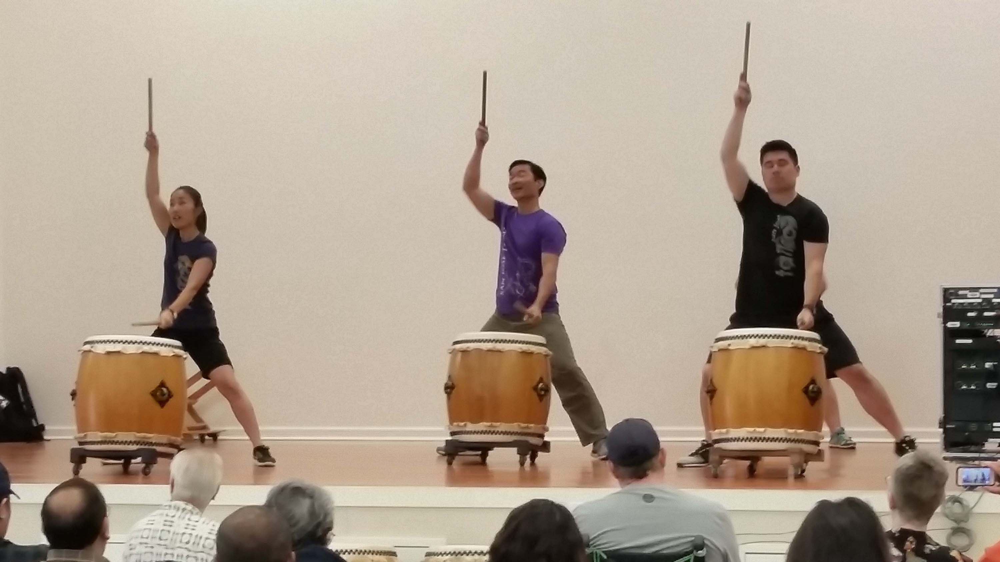
- After lunch, we watch and listen to Japanese taiko drummers.
- The drums were loud.
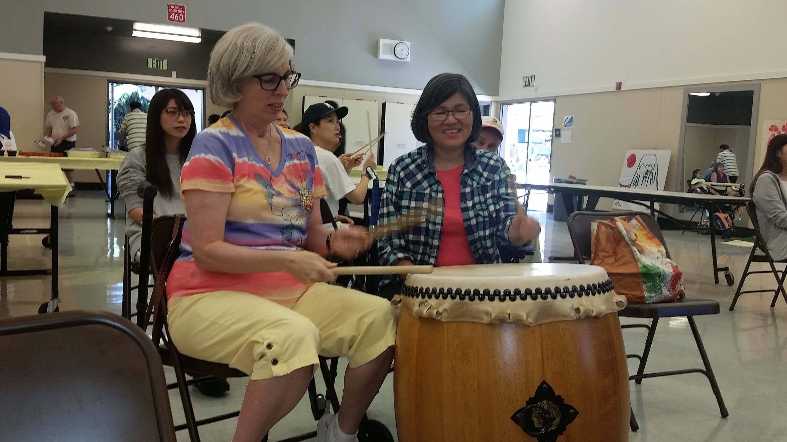
- I even have the opportunity to beat the drum.
7/21/2017 - Aphasia Talkfest
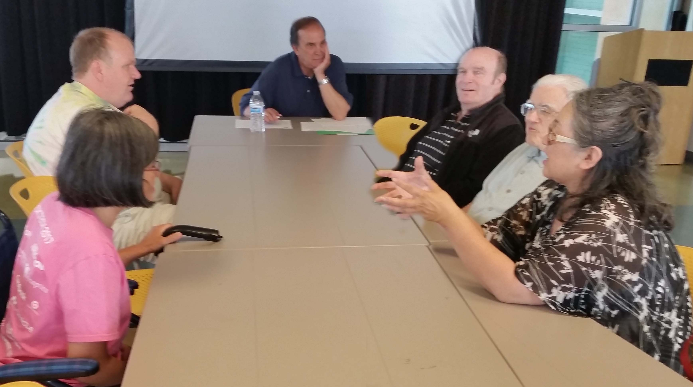
- I attend Aphasia Talkfest.
-
Today, Ken Jordan leads the group.Usually, Regina Tipton leads too.
- Dr. Peter Nelson, Armando Botelli and his wife Mary Lee have come to chat.
7/18/2017

- I start a new speech and language program at the Kay Armstead Center for Communication Disorders.
- The program is a non-profit community clinic located at San Jose State.
-
My instructor is a graduate student named Elaine Yau.Her supervisor is named Anita Schaack.
- I attend one-hour sessions twice a week for the next month.
- On Tuesdays, I have private sessions with Elaine. On Thursdays, a group of students converse with each other.
7/1/2017 - Saratoga Farmers Market

- This morning we go to the Saratoga Farmers Market.
- I walk by pushing the transport chair instead of using my cane.
- The broad-rimmed straw hat keeps the summer sun off my face.
- I like looking at the different booths and trying their various fresh and unique offerings.
- I especially like the Apricot King booth.
- Their slip-pit apricots are my favorite snack.
- Wen always buys chinese vegetables and thai basil when it is available.
- Sometimes we buy house plants too.
June 2017
6/30/2017 - First fb Visit With Robert

 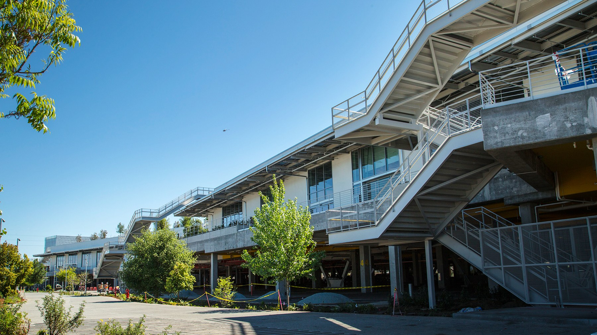
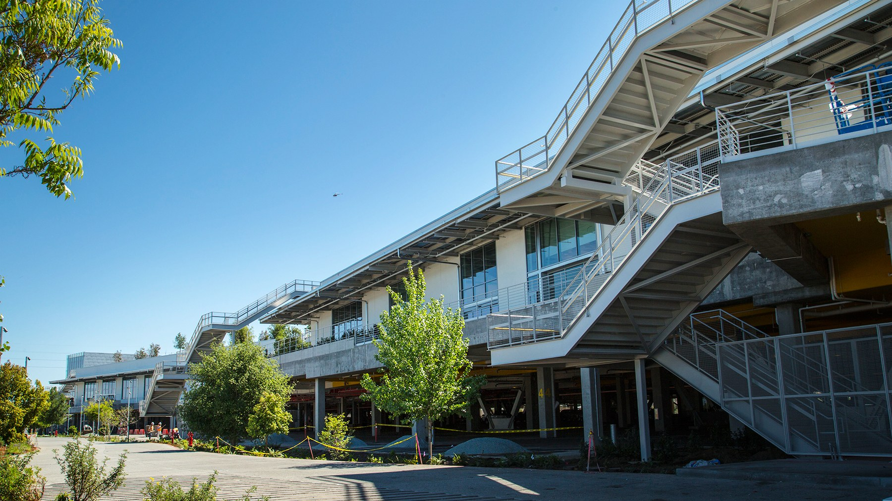
- We visit Robert and have dinner at Facebook for the first time this summer.
- I order BBQ ribs and brisket from the Lightning Bolt shack.
- The corn on the cob, potato salad and cole slaw taste great too.
- We visit the Sweet Shop for dessert where I get a chocolate chip cookie and an ice cream cone.
- He tells us the group to which he was assigned disbands four hours after his arrival.
- He scrambles for the first two days to find another internship position.
- Robert meets and speaks to over thirty people he knows at Facebook.
- His Caltech advisor puts him in contact with a former student who is managing a Facebook AI research team.
- Every member of the group has or is earning a PhD.
- His interview seems very familiar to Robert because he had setup the same environment at Caltech for his advisor.
- He becomes the first intern ever in the group.
- His desk is located in MPK Building 20.
- We are so proud of him.
6/25/2017 - Meilan Graduation Party
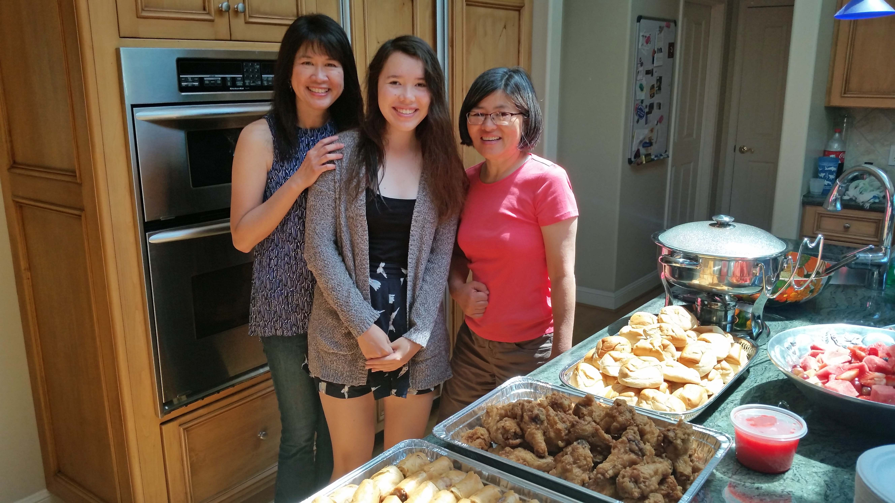


 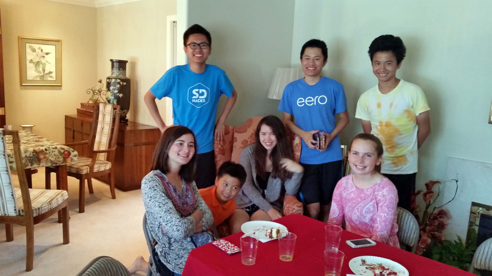
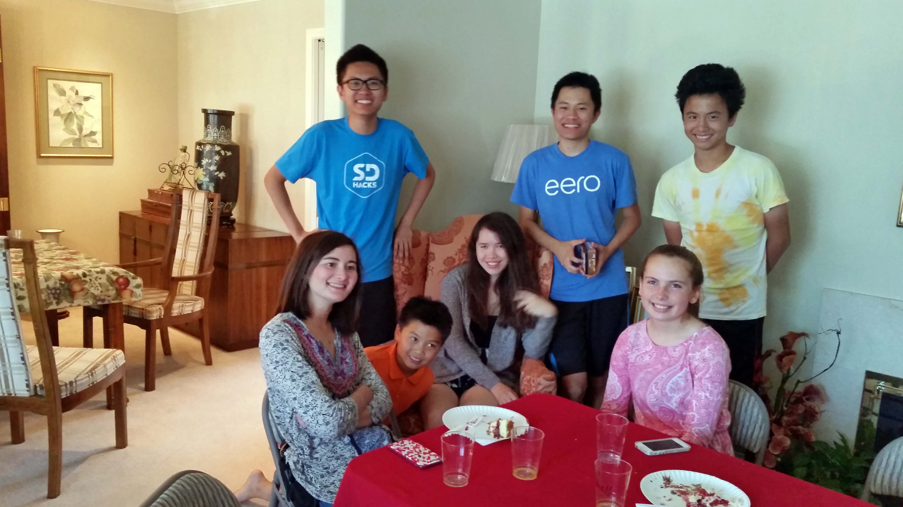
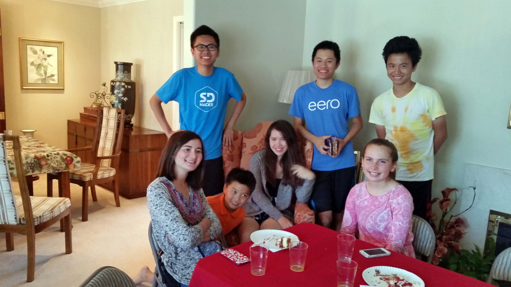
- Aunt Bett and I host a high school graduation party for Wen's niece Meilan.
- She graduated from The Harker School a week earlier.
- We prepare and buy a variety of foods.
- Wen prepares pulled pork and beans with cole slaw.
- The pork is smoked for 16 hours.
- Aunt Bett prepares Popo's favorite chicken penne pasta salad.
- We also grill teriyaki steak and serve it with oriental noodles.
- We bought in eggrolls and chicken wings from the new King Eggroll that opened up 3 miles away.
- For dessert, we have chocolate cake from the bakery.
- Meilan will be attending Stanford University in the fall.
- David should still be teaching and working in his Bioengineering lab by then.
May 2017
My Strategies
I have 8 strategies to help me speak as I recover from aphasia.

-
Focus on it.
-
Close my eyes.
-
Inhale slowly.
-
Blow slowly through my mouth.
This strategy is useful to calm myself. -
-
Visualize it.
-
Close my eyes.
-
Visualize the object or action.
-
See the letters in the word.
-

-
Say it.
-
Subvocalize it.
-
Utter the first phoneme.
-
Sound it out.
-
Tap out syllables.
-

-
Find it.
-
Access wordbank app.
-
Select the category of word to be spoken.
-
Scroll down until I find the word.
-
Press word to have it spoken.
-
-
"Air" Spell it.
-
Trace out the first letters of the word.
-
Utter that phoneme.
-

-
Gesture it.
-
Act out the meaning of the word.
This strategy is similar to playing charades.This is particularly useful for verbs and actions. -

-
Draw it.
-
Get a sheet of paper.
-
Grab a pencil.
-
Draw the object I have in my mind.
-
 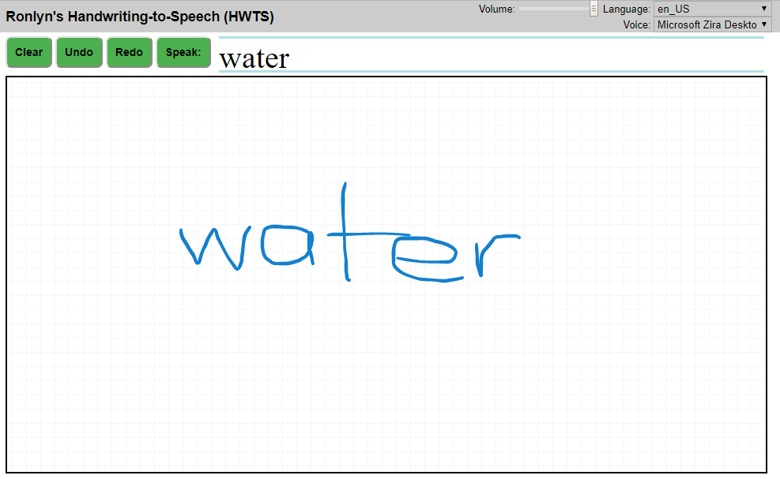
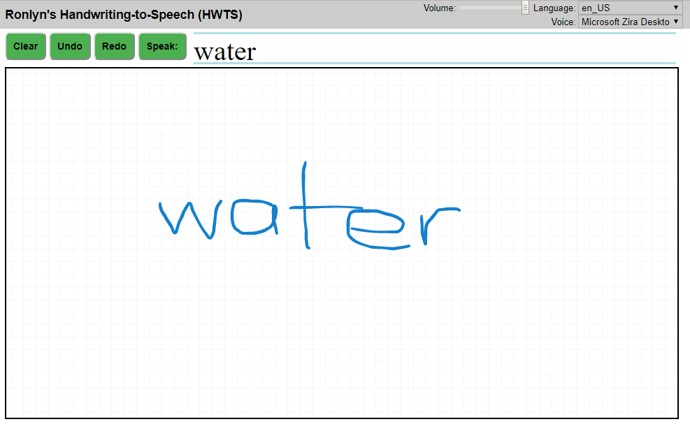
-
Write it.
-
Get a sheet of paper.
-
Grab a pencil.
-
Start writing the letters in the word.
-
Utter the phonemes as I write the syllables.
-
Access handwriting-to-speech app.
-
Start by using finger to trace letters in the word.
-
Check to see if app is translating letters correctly.
-
Press "Speak" button to have the word spoken.
-

-
Describe it.
-
Looks like...
-
Feels like...
-
Smells like...
-
Sounds like...
-
Tastes like...
This strategy is similar to playing simile.This is particularly useful for nouns. -
Who Am I

- My name is Ronlyn Goo.
- I am 55 years old.My husband is named Wen.We have been married 25 years and we live in Saratoga.
-
I was born in San Francisco.My family moved to Pacifica where I grew up and graduated from Terra Nova High School.
- I have a Bachelor degree in Chemical Engineering from UC Berkeley.
- I also have an MBA degree from Stanford.
- My current occupation is stroke rehabilitation and recovery.
- My hobbies are reading, solving puzzles, surfing the internet and baking.
Test
no error
no error
sentence idx:0, word idx:0, word id:0, last spoken word:0